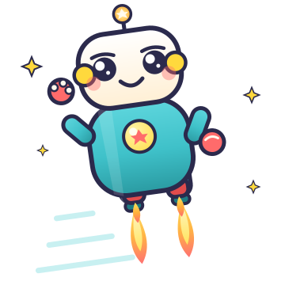

เรียนเขียนโค้ด
ด้วยการเล่น!
ไม่ต้องอ่านออกก็เล่นได้ ใช้เพียงการแตะและเสียงประกอบ ทุกเกมจบใน 3–5 นาที และตลอดทั้งเว็บไม่มีคำว่า “แพ้” หรือ “ผิด” ให้เด็กกลัวเลย

11 ห้องเล่น
มินิเกมหลากหลาย เล่นซ้ำได้ไม่จำกัด ด่านแรกมี 8 ด่านให้ไต่
12 กิจกรรม
กิจกรรมเสริมแบบไม่ใช้จอ เล่นกับของจริงในบ้าน
รางวัลให้กำลังใจ
ได้ดาวทุกครั้งที่ลงมือทำ สะสมเป็นสติกเกอร์ 5 ระดับ
สถานะแพ้ = 0
ไม่มีเวลาจับ ไม่มีหักคะแนน แก้ได้เรื่อย ๆ จนกว่าจะสำเร็จ
11 ห้องเล่นในห้องเล่นของเรา
เรียงจากง่ายไปยากขึ้นทีละนิด เด็กเล่นซ้ำได้ไม่จำกัด และทุกครั้งที่ทำสำเร็จจะได้ “ดาว” ไปสะสมสติกเกอร์ เข้าไปที่ ห้องเล่น แล้วเลือกจากล็อบบี้ได้ทั้ง 11 ห้อง — ระบบจะจำสถิติของแต่ละห้องไว้ให้เอง
เด็กกี่ขวบ เริ่มตรงไหนดี?
ทุกเด็กไปได้คนละจังหวะ ตารางนี้เป็นแนวทาง ไม่ใช่กฎ
เริ่มจาก “ดูแล้วทำตาม”
เปิดสถานี 1 ด่านที่ 1–2 แล้วใช้ปุ่ม “ดูตัวอย่างทางเดิน” ให้เด็กดูก่อน จากนั้นให้เขาลองทำตามทีละปุ่ม อาจยังเรียงคำสั่งเองไม่ได้ ไม่เป็นไร
วางแผนเองได้แล้ว
ลองเล่นครบทั้ง 5 สถานี เริ่มจากสถานี 1 ถึง 3 ตามลำดับ เด็กวัยนี้มักเริ่มคิดก่อนกด และเริ่มสนุกกับการแก้คำสั่งที่พลาด
ต่อยอดได้เลย
เพิ่มโหมดท้าทาย เช่น จำกัดจำนวนคำสั่งให้น้อยลง หรือใช้กิจกรรมไม่ใช้จอข้อ 8 และ 12 แล้วค่อยต่อไปเครื่องมือบล็อกแบบลากวางในอนาคต
แผนที่การเล่นทั้งเว็บ
ภาพเดียวเห็นครบทั้งโครงเว็บ สถานีเรียนรู้ และทักษะที่เด็กจะได้ทีละนิด

แผนเล่น 4 สัปดาห์ วันละ 15 นาที
สำหรับครอบครัวที่อยากมีจังหวะชัดเจน ทำตามได้เลย หรือดัดแปลงตามความสนุกของเด็ก
รู้จักคำสั่ง
- วันจันทร์: กิจกรรมไม่ใช้จอข้อ 1 “หุ่นยนต์มนุษย์”
- วันพุธ: สถานี 1 ด่านที่ 1–2 ใช้ปุ่มดูตัวอย่างได้
- วันศุกร์: สถานี 1 ด่านที่ 3–4 แล้วชวนเด็กเล่าว่าทำไมถึงสำเร็จ
มองเห็นรูปแบบ
- วันจันทร์: สถานี 2 ข้อ 1–5 ลองกด “ฟังจังหวะ” ด้วย
- วันพุธ: กิจกรรมไม่ใช้จอข้อ 4 “ตบตามจังหวะ”
- วันศุกร์: สถานี 2 ข้อที่เหลือ + กิจกรรมข้อ 6 “เพลงทำซ้ำ”
จำแนกและเงื่อนไข
- วันจันทร์: กิจกรรมข้อ 7 “แยกของบนโต๊ะ” ก่อนเปิดจอ
- วันพุธ: สถานี 3 ชุดแรก (แยกตามสี)
- วันศุกร์: สถานี 3 ชุดที่สอง (แยกตามชนิด) + กิจกรรมข้อ 8
จำ สร้าง และเล่า
- วันจันทร์: สถานี 4 โหมดทำตามแบบ 2 รอบ
- วันพุธ: สถานี 5 “เรียงเรื่องราว” + กิจกรรมข้อ 11
- วันศุกร์: ให้เด็กเลือกสถานีโปรดเอง เก็บภาพผลงานใส่แกลเลอรี แล้วเล่าให้คนอื่นฟัง
ออกแบบมาเพื่อเด็ก 5 ขวบโดยเฉพาะ
ภาพและเสียงมาก่อนตัวอักษร
เด็กวัยนี้ยังอ่านไม่คล่อง ทุกปุ่มจึงใช้ไอคอนใหญ่ ๆ เสียงตอบกลับทันที และมีคำพูดภาษาไทยช่วยบอกว่าต้องทำอะไร
ไม่มีสถานะแพ้
ตอบผิดไม่มีการหักคะแนน ไม่มีหมดเวลา ระบบจะบอกว่า “ลองอีกทีนะ” แล้วให้แก้ได้ทันที เพื่อรักษาความกล้าลองของเด็ก
รอบละ 3–5 นาที
จบหนึ่งสถานีได้เร็ว ทำให้เด็กมีสมาธิจดจ่อเต็มที่ และจบด้วยความภูมิใจมากกว่าความเหนื่อย
ปุ่มใหญ่ แตะง่าย
ทุกปุ่มมีขนาดใหญ่พอสำหรับนิ้วเล็ก ไม่ต้องลากหรือวางให้แม่นยำ เด็กใช้แท็บเล็ตหรือเมาส์ก็เล่นได้
รางวัลแบบให้กำลังใจ
ได้ดาวทุกครั้งที่ลงมือทำ ไม่ใช่เฉพาะตอนถูก มีสติกเกอร์ให้สะสม และความก้าวหน้าถูกจำไว้ใช้ครั้งต่อไป
ผู้ใหญ่เล่นด้วยได้
มีหน้าคู่มือสำหรับครูและผู้ปกครอง อธิบายว่ากิจกรรมแต่ละอย่างสอนอะไร และควรนั่งเล่นด้วยอย่างไร
เริ่มใน 3 ขั้น
เปิดห้องเล่น
เข้าไปที่หน้าห้องเล่น แล้วเลือกสถานีที่ 1 “หุ่นยนต์เก็บดาว” เป็นด่านแรกเสมอ เพราะง่ายที่สุด ถ้าเด็กลังเล ใช้ปุ่ม “ดูตัวอย่างทางเดิน”
นั่งข้าง ๆ สักครู่
รอบแรกใช้เวลาประมาณ 2 นาทีในการชวนเด็กแตะลูกศรทีละปุ่ม แล้วบอกว่า “ลองกดปุ่มนี้ดูสิ หุ่นยนต์จะทำอะไรนะ”
ปล่อยให้เด็กนำ
พอเด็กเข้าใจแล้ว ถอยออกมาสังเกต ให้เขาลองผิดลองถูกเอง คำถามที่ดีที่สุดคือ “ทำไมหุ่นยนต์ถึงเดินแบบนั้นนะ”
คำถามที่พบบ่อย
เด็กยังอ่านไม่ออก จะเล่นได้ไหม
ได้ เพราะทุกปุ่มใช้ไอคอนขนาดใหญ่ มีเสียงตอบกลับทันที และมีเสียงพูดภาษาไทยช่วยอธิบาย ข้อความมีไว้ให้ผู้ใหญ่ช่วยอ่านเท่านั้น
ต้องเล่นตามลำดับสถานีไหม
แนะนำให้เริ่มที่สถานี 1 เพราะฝึกเรื่องลำดับซึ่งเป็นพื้นฐานของทุกอย่าง แต่เด็กจะข้ามไปสถานีไหนก่อนก็ได้ตามความสนใจ
เล่นซ้ำด่านเดิมหลายรอบ ผิดไหม
ไม่ผิดเลย การเล่นซ้ำคือหัวใจของการเรียนรู้ในวัยนี้ เด็กกำลังทดสอบว่า “ถ้าเปลี่ยนวิธี ผลจะเปลี่ยนไหม”
เว็บนี้ปลอดภัยแค่ไหน
ไม่มีโฆษณา ไม่มีการสมัครสมาชิก ไม่มีการส่งข้อมูลออกจากอุปกรณ์ ดาวและสติกเกอร์ถูกเก็บในเบราว์เซอร์ของเครื่องนั้นเท่านั้น และล้างได้ทุกเมื่อจากหน้าผู้ปกครอง
มีคำถามเพิ่มเติม อ่านฉบับเต็มได้ที่ หน้าสำหรับครูและผู้ปกครอง